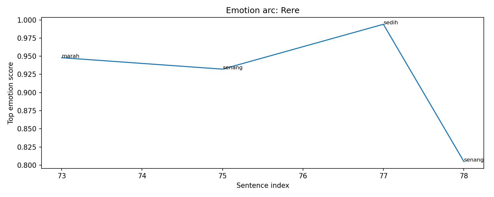
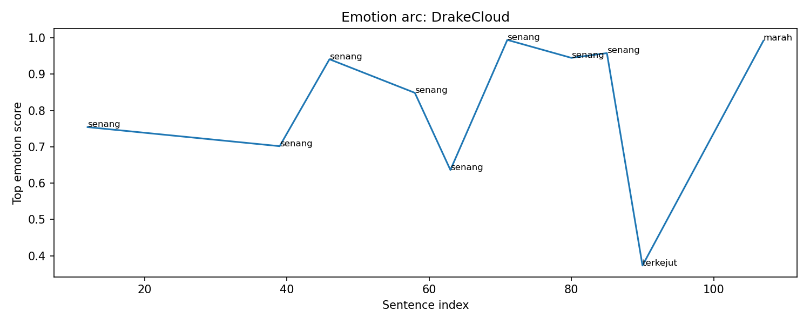
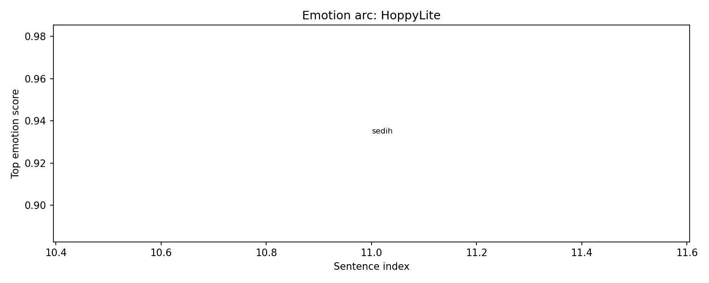
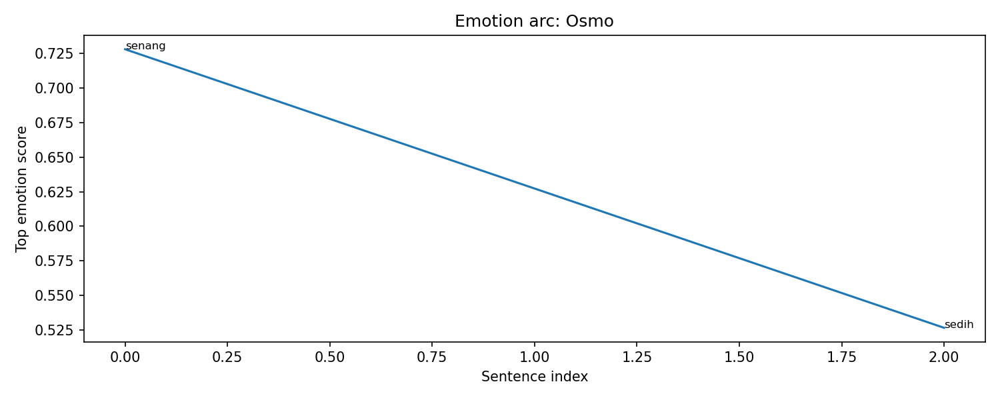

Overall Chapter Summary
WiraMadha seeks adventure in a dungeon, teaming up with several players including Sylvia, while facing the formidable Kelabang Agni.
Chapter Drift Analysis
Similarity: 0.8251
Drift: 0.1749
Low drift. The chapter remains semantically close to the early story baseline.
Bug Severity Distribution
Story Bugs Found
Event ID ev_001_001 appears with different summaries.
Meaning: The same event ID ev_001_001
is used for different narrative moments.
Earlier version: Wira selects the quest to climb Gunung Bromo and acquires a mount named Osmo.
New version: The team fights Kelabang Agni, using their abilities to overcome its attacks, ultimately defeating it and earning items.
Why it matters: duplicated event IDs can corrupt causality, item ownership, memory tracking, and location tracking.
Character Arc Analysis
Kelabang Agni

Emotional Arc Summary
Kelabang Agni exhibits a range of emotions throughout the battle, primarily expressing fierce and aggressive energy. Initial excitement is noted when it emerges, transitioning to shock as it demonstrates formidable attacks, particularly in Phase 3.
Action-Based Interpretation
As Kelabang Agni enters the arena, its movements elicit joy and admiration among the players. The thrill, indicated by feeling "senang," underscores the excitement of the confrontation. However, as it attacks, especially with its fire breath and anger directed toward Sylvia, a tension builds in the narrative.
Key Turning Point
The turning point occurs when heavy damage is inflicted on Kelabang Agni, leading to its cry of pain. This shift not only changes the players' fortune but also marks a significant shift in Kelabang’s emotional state, indicating vulnerability.
Narrative Meaning
This arc mirrors the dichotomy of the hunters versus the hunted. Kelabang Agni, at its most formidable, faces an inevitable downfall, illustrating themes of resilience and confrontation in adversity.
Potential Writing Issue
The emotional spikes of joy and excitement may feel abrupt if not fully justified by the escalating danger, pointing to a potential inconsistency in building stakes throughout the encounter.
Rere

Emotional Arc Summary
Rere experiences a tumultuous emotional journey throughout the chapter, exhibiting strong feelings of anger, joy, and sadness as the team engages in battle against Kelabang Agni. Her emotions shift rapidly, reflecting her vulnerable yet supportive nature in the group dynamic.
Action-Based Interpretation
Initially, Rere expresses frustration with a call to action (“Turunlah dan bantu kami”), indicating a defensive stance. This anger transitions to joy as her unique abilities are acknowledged (“Rere, peri mungil bersayap”), showcasing her pride as a healer. However, her earlier invocation of support mode hints at an underlying sadness, feeling a burden in her role. Finally, she performs vital healing actions, symbolizing her embrace of teamwork and her role as a nurturer, which brings joy to her and the party (“teriak Sylvia” and her healing mist).
Key Turning Point
The shift from marah to senang occurs when Rere actively supports her team, reinforcing her emotional investment in their success and solidifying her identity as a critical support character.
Narrative Meaning
This emotional fluctuation highlights Rere's complexity, reflecting the importance of support roles in group endeavors and her struggle between self-doubt and contribution.
Potential Writing Issue
The abrupt sadness expressed while calling for support seems inconsistent without adequate context or triggering events, potentially confusing the reader about her emotional state.
DrakeCloud

Emotional Arc Summary
DrakeCloud displays a primarily positive emotional arc, characterized by consistent feelings of happiness as he engages in combat and teamwork. Transitioning from confident positioning to expressing surprise and then anger, his emotions fluctuate but remain centered around a victorious mindset.
Action-Based Interpretation
Throughout the battle with Kelabang Agni, DrakeCloud showcases his rogue class skills, confidently maneuvering and initiating combos. His actions—flanking the monster, coordinating with teammates—reflect his excitement and engagement during the fight. However, even amidst success, he shows vulnerability as he is lightly burned, creating a moment of tension.
Key Turning Point
The shift to surprise and anger occurs following a series of successful attacks. Although he shows gratitude as he exits, the anger suggests possible frustration with the overall encounter or his role within the team dynamics.
Narrative Meaning
This character arc illustrates the rollercoaster of emotions faced in high-stakes adventure, emphasizing resilience and camaraderie even when faced with challenges.
Potential Writing Issue
The transition from happiness to anger lacks clear narrative support, suggesting inconsistency in emotional continuity that could be developed further.
WiraMadha

Emotional Arc Summary
WiraMadha experiences a mix of sadness, fear, and happiness throughout the chapter. Initial feelings of sadness emerge as he cares for his steed Osmo, reflecting a contemplative tone. As he engages with Sylvia, his emotions shift to happiness, suggesting a budding connection and excitement for the adventure ahead.
Action-Based Interpretation
Wira actively participates in battling Kelabang Agni, showcasing his skills with actions like the Perfect Parry. These actions bolster his confidence and sense of accomplishment, aligning with periods of happiness as he successfully communicates with teammates and holds his ground in battle.
Key Turning Point
Wira's most significant emotional shift occurs when he successfully parries an attack, transitioning from fear of potential failure to a sense of mastery and camaraderie with his team, highlighted by his interactions with Sylvia.
Narrative Meaning
The emotional fluctuations illustrate Wira's growth from introspection to proactive engagement. His evolving relationship with Sylvia enriches his quest, symbolizing both personal stakes and collaborative strength in face of challenges.
Potential Writing Issue
There are moments of sadness that do not connect clearly to specific actions, indicating possible inconsistencies in the emotional arc amidst the ongoing battle.
HoppyLite

Emotional Arc Summary
HoppyLite's emotional journey begins with a strong feeling of sadness, indicated by a high score in the emotion timeline. The character's introduction as a "Wanderer" reflects a sense of loss or longing, which contrasts with the subsequent action-driven climax.
Action-Based Interpretation
In the chapter, HoppyLite participates in a team battle against Kelabang Agni. Despite the initial sadness, HoppyLite’s proactive engagement in combat highlights a shift from passive contemplation to active participation, suggesting a struggle to overcome emotional hurdles.
Key Turning Point
The turning point occurs during the fight against Kelabang Agni, where HoppyLite collaborates with teammates, indicating a transition from isolation to connectivity. This shift suggests a moment of growth and resilience.
Narrative Meaning
The contrast between HoppyLite's emotional state and actions signifies the character's quest for adventure despite underlying sadness. This dichotomy enriches the narrative, showing personal growth through engagement in camaraderie and conflict.
Potential Writing Issue
The emotional sadness at the beginning appears disconnected from HoppyLite's later active participation in the fight. This inconsistency may confuse readers regarding the character's internal state and motivations.
Osmo

Emotional Arc Summary
Osmo begins with a sense of happiness as he arrives at the small town of Sagara Rimba, signaling a hopeful start to the adventure. However, this emotion shifts to sadness as he experiences discomfort from the long journey, illustrated by WiraMadha's gesture of affection towards him.
Action-Based Interpretation
Despite no direct actions from Osmo in this chapter, his emotional responses are closely linked to WiraMadha's actions—his arrival at the gateway indicates anticipation, while WiraMadha soothing Osmo suggests empathy and a bond between them, highlighting Osmo's vulnerability.
Key Turning Point
The key turning point occurs when WiraMadha dismounts and comforts Osmo. This act not only reveals the emotional connection but also foreshadows the challenges ahead in the dungeon, where companionship is vital.
Narrative Meaning
The emotional transition from joy to sadness reflects the complexities of adventure—anticipation can be accompanied by physical strain. This dynamic prepares the reader for deeper character interactions and challenges ahead.
Potential Writing Issue
The emotional drop in Osmo's arc may feel inconsistent, as no direct actions showcase why he feels sad immediately after a moment of happiness. Adding actions or thoughts could strengthen this emotional transition.
Sylvia

Emotional Arc Summary
Sylvia's emotional journey in this chapter oscillates between excitement and fear. She initially feels joy and enthusiasm when preparing for the dungeon adventure, indicated by high happiness scores as she engages with Wira and prepares her magic. However, moments of fear arise as the battle with Kelabang Agni escalates, particularly when the creature targets her directly.
Action-Based Interpretation
Sylvia's actions reflect her emotions; she actively participates in casting spells to assist her team, showcasing her initial excitement. Despite her joy, the high tension during the fight leads to fear, especially when she is targeted by the monster, which aligns with her drop in emotional scores.
Key Turning Point
A crucial moment occurs when Sylvia picks up the Essence Shard, symbolizing victory and a shift back to happiness after the chaotic battle. This moment represents a culmination of her emotional arc, transitioning from anxiety back to excitement.
Narrative Meaning
This arc illustrates the dual nature of adventure—joy and fear—and highlights Sylvia's resilience. Her emotional fluctuations humanize her, making her relatable in the face of danger.
Potential Writing Issue
While the emotional shifts mostly align with her actions, some spikes in fear seem abrupt, particularly without preceding events to fully justify her anxiety, suggesting a potential inconsistency that could be smoother.
Event Timeline
Lore Graph
Nodes represent characters, scenes, events, items, facts, and locations.